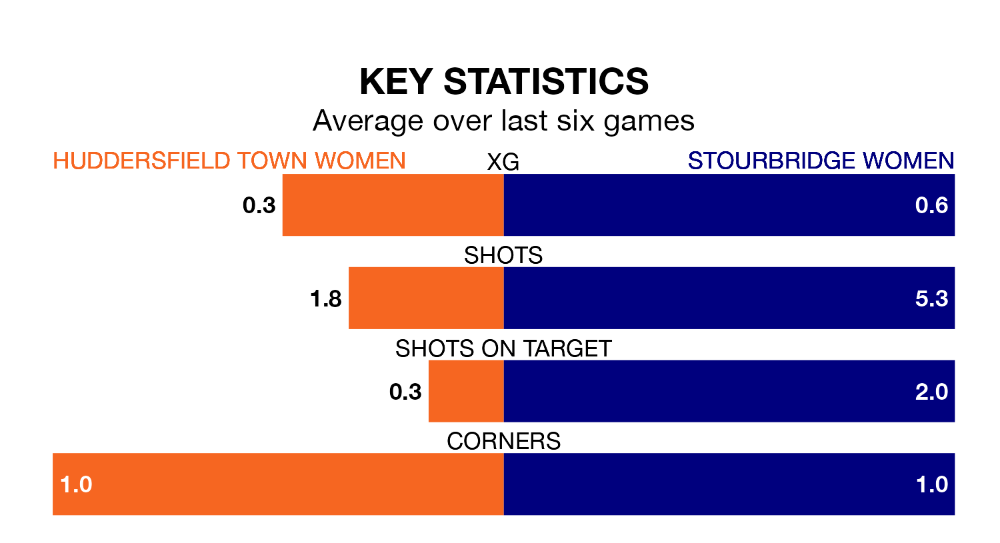

Sunday's early match sees two relegation candidates play each other, as 11th-ranked Huddersfield Town Women host 10th-placed Stourbridge Women.
Huddersfield Town have picked up 12 points from their first 12 Women's National League Premier Division – North games, with two wins and six draws.
That is five points less than Stourbridge have collected, having won four and drawn five.
Huddersfield Town are in bad form in the Women's National League Premier Division North, with no wins and four draws from their last six games.
But with no wins and a draw over that period, Stourbridge's form is even worse – they have taken one point from 18, compared to the hosts' four.
With 14 goals in 21 games so far this season, Huddersfield Town are the league's joint-third-lowest scorers with 0.7 goals per game. And they are conceding more than average, letting in 44 goals at a rate of 2.1 per game.
The away team are also below average scorers, with 1.2 goals per game, compared to a league average of 1.5. They have conceded 3.0 goals per game.
Huddersfield Town's last match was on April 21, a 0-0 draw against Fylde Women.
Stourbridge lost 3-2 against Liverpool Feds last time out, on April 14.
Updated: 12:00 (UTC), 02/05/24